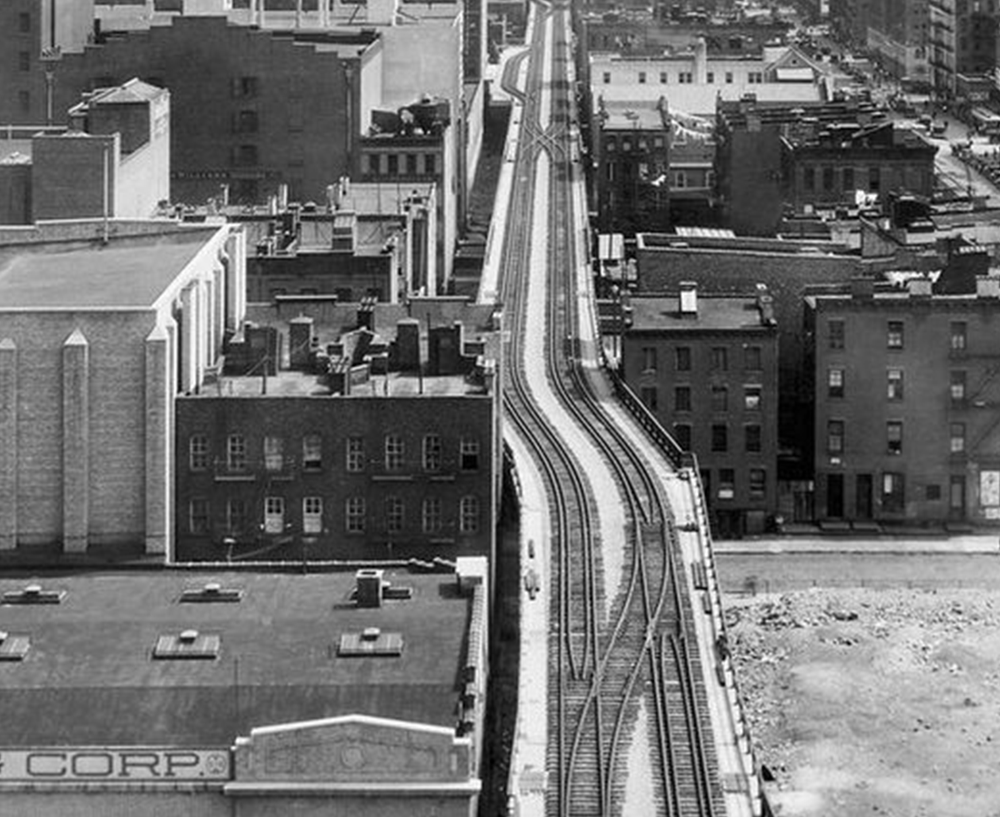
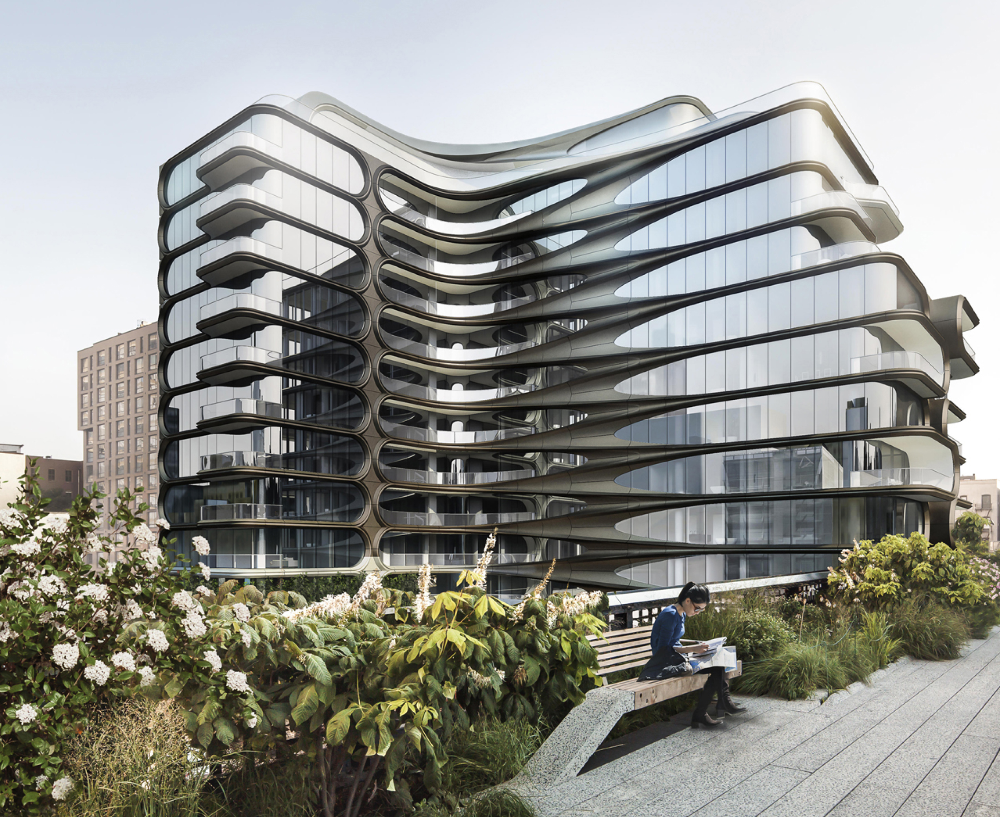

Background
Brooklyn Bridge Park is a waterfront park located along the East River in Brooklyn, New York City. It spans 1.3 miles (2.1 kilometers) and covers approximately 85 acres (34 hectares) of land. The park offers stunning views of the Manhattan skyline, the Brooklyn Bridge, and the Statue of Liberty.
Before the development of Brooklyn Bridge Park, the area along the Brooklyn waterfront underwent significant transformations over the years.
Before the development of Brooklyn Bridge Park, the area along the Brooklyn waterfront underwent significant transformations over the years.

The Brooklyn waterfront sometime in the 1900s/
Courtesy Michael Van Valkenburgh Associates
The area now occupied, was once a bustling industrial waterfront. It was a major shipping and manufacturing hub, with warehouses, factories, and shipping piers dotting the shoreline.
The surrounding area had a mix of residential and industrial properties. The neighborhoods in proximity to the park include DUMBO (Down Under the Manhattan Bridge Overpass), Brooklyn Heights, and Fulton Ferry. Located just north of the park, Brooklyn Heights is a historic neighborhood known for its tree-lined streets and well-preserved brownstones. It has a mix of residential buildings, including townhouses, apartments, and co-op buildings. Many of the buildings in this neighborhood date back to the 19th century and reflect architectural styles from that era.

A pleasant urban green life
Status quo
The park's construction began in 2008, and the first sections opened to the public in 2010. Since then, the park has been developed in phases, with new sections opening periodically. The park's design combines recreational spaces, greenery, and restored industrial features, blending natural and urban elements.
Funding for the park comes from a combination of public and private sources, including the city, state, and federal governments, as well as donations and revenue generated through commercial leases within the park.
Over the years, Brooklyn Bridge Park has become a popular destination for both residents and tourists, offering a vibrant and scenic public space for recreation, relaxation, and community gatherings.

Pier 6 development is vital to Brooklyn Bridge Park | Crain's New York Business
The up and coming
After the development of Brooklyn Bridge Park, several new places and attractions were built in the surrounding area. It increased the commercial value of the space, places that came up were as such -
Empire Stores: Located just outside the park near Jane's Carousel, the historic Empire Stores building has been revitalized and transformed into a mixed-use complex. It now houses offices, restaurants, cafes, and retail spaces.
One Brooklyn Bridge Park: Adjacent to the park, One Brooklyn Bridge Park is a residential building that offers luxury condominiums and apartments with views of the park and the waterfront.
Pierhouse: Located at 90 Furman Street, Pierhouse is a luxury residential complex situated at the southern edge of Brooklyn Bridge Park. It offers upscale condominiums and townhouses with stunning views of the park, the Manhattan skyline, and the waterfront. The building features high-end finishes, private outdoor spaces, and access to amenities such as a fitness center, a rooftop terrace, and a private parking garage.
Empire Stores converted an old warehouse in luxury stores
Commercial activities like the Time Out Market
Background
The Domino Sugar Refinery, from which the park takes its name, was established in 1856 by the American Sugar Refining Company. The refinery complex expanded over time, becoming one of the largest sugar processing facilities in the world. It dominated the landscape and economy of the neighborhood for more than a century.
In the 20th century the Domino Sugar Refinery was a significant industrial operation throughout the 20th century, employing thousands of workers and producing large quantities of sugar products. The refinery ceased operations in 2004, marking the end of an era for the site and leaving a massive industrial space vacant along the East River waterfront.
Following the closure of the refinery, the redevelopment of the site began. In 2012, the property was acquired by Two Trees Management, a real estate development firm. the neighborhood surrounding the Domino Sugar Refinery was characterized by a working-class population, consisting of industrial workers, immigrants, and long-time residents. Prospect Park or Gramercy Park, but in a market where buyers can become dizzy trying to distinguish one marble-kitchened, white oak-floored condo from another, a view of treetops swaying outside the living room window is a distinctive edge
In the 20th century the Domino Sugar Refinery was a significant industrial operation throughout the 20th century, employing thousands of workers and producing large quantities of sugar products. The refinery ceased operations in 2004, marking the end of an era for the site and leaving a massive industrial space vacant along the East River waterfront.
Following the closure of the refinery, the redevelopment of the site began. In 2012, the property was acquired by Two Trees Management, a real estate development firm. the neighborhood surrounding the Domino Sugar Refinery was characterized by a working-class population, consisting of industrial workers, immigrants, and long-time residents. Prospect Park or Gramercy Park, but in a market where buyers can become dizzy trying to distinguish one marble-kitchened, white oak-floored condo from another, a view of treetops swaying outside the living room window is a distinctive edge
The industrial landscape
The neibhourhood around
Domino Park officially opened to the public in June 2018. The park was designed by the landscape architecture firm James Corner Field Operations, known for its work on the High Line in Manhattan.
The vision for the site's transformation included preserving elements of the refinery complex while creating a vibrant mixed-use development that incorporated residential, commercial, and public space components. Today, Domino Park serves as a popular public space for residents and visitors. It features various amenities, including lawns, playgrounds, volleyball courts, a water feature, and a taco stand. The park's location provides stunning views of the Manhattan skyline and the Williamsburg Bridge.
That this public space renaissance over this time frame has occurred in spite of New York’s appreciating land values that maximize density and “highest and best use” is nothing short of amazing. It has been aided and abetted by visionary leadership across all sectors, by New York’s growing economy and enlightened public and private investment, by crime reduction and safer public spaces, and notably by increasingly sophisticated landscape architecture and urban design approaches, with these professionals now designing public spaces and infrastructure that achieve design excellence while embracing community character and sustainable and resilient solutions.

Background
Status quo
Located adjacent to Domino Park at 260 Kent Avenue, One South First is a luxury residential tower developed by Two Trees Management. It offers a range of high-end apartments with expansive views of the park, the East River, and the Manhattan skyline. The building features a modern architectural design, luxurious finishes, and a wide range of amenities, including a fitness center, rooftop pools, communal lounges, and outdoor spaces.
325 Kent Avenue is a luxury rental building developed by Two Trees Management. It offers a variety of upscale apartments with contemporary designs, high-end finishes, and panoramic views of the park and the waterfront.
3The Austin Nichols House: Situated on the waterfront near Domino Park, The Austin Nichols House is a converted warehouse that offers luxury condominiums. The building combines historic elements with modern design, featuring spacious apartments with high-end finishes, oversized windows, and waterfront views. Amenities include a fitness center, a residents' lounge, a landscaped courtyard, and a rooftop terrace.
3These luxury residential buildings cater to individuals seeking high-quality living spaces, proximity to Domino Park, and access to a range of upscale amenities. They have contributed to the transformation of the surrounding area, attracting affluent residents and further enhancing the desirability of the Domino Park neighborhood.
325 Kent Avenue is a luxury rental building developed by Two Trees Management. It offers a variety of upscale apartments with contemporary designs, high-end finishes, and panoramic views of the park and the waterfront.
3The Austin Nichols House: Situated on the waterfront near Domino Park, The Austin Nichols House is a converted warehouse that offers luxury condominiums. The building combines historic elements with modern design, featuring spacious apartments with high-end finishes, oversized windows, and waterfront views. Amenities include a fitness center, a residents' lounge, a landscaped courtyard, and a rooftop terrace.
3These luxury residential buildings cater to individuals seeking high-quality living spaces, proximity to Domino Park, and access to a range of upscale amenities. They have contributed to the transformation of the surrounding area, attracting affluent residents and further enhancing the desirability of the Domino Park neighborhood.

Background
The up and coming
That this public space renaissance over this time frame has occurred in spite of New York’s appreciating land values that maximize density and “highest and best use” is nothing short of amazing. It has been aided and abetted by visionary leadership across all sectors, by New York’s growing economy and enlightened public and private investment, by crime reduction and safer public spaces, and notably by increasingly sophisticated landscape architecture and urban design approaches, with these professionals now designing public spaces and infrastructure that achieve design excellence while embracing community character and sustainable and resilient solutions.

Area covered in construction

A view of Kent from the park
Background
The High Line was built as part of the West Side Improvement Project, designed to alleviate street-level rail traffic in Manhattan's industrial district. The elevated railway was used to transport goods between factories, warehouses, and the city's waterfront. The first section of the High Line, known as the West Side Elevated Freight Railroad, opened in 1934. When the High Line was first constructed in the 1930s, the surrounding neighborhoods were primarily industrial areas. The district housed factories, warehouses, and manufacturing facilities, attracting a working-class population. Many of the residents were employed in the industrial sector and worked in the factories and businesses located in the area.

The neibhorhood around
Uasge and density
Beginning in the 1960s and 1970s, the neighborhoods around the High Line started to attract artists, musicians, and other creative individuals. The industrial buildings and lofts in the area provided affordable living and studio spaces, fostering a vibrant artistic community. Many artists were drawn to the area's unique character and the availability of large, open spaces for their work.
Over the years, the demand for rail freight transportation declined, and the High Line saw a decrease in usage. The last train ran on the High Line in 1980, and the rail structure gradually fell into disuse and disrepair.
The design team of landscape architects James Corner Field Operations and architecture firm Diller Scofidio + Renfro was selected to transform the High Line into a public park. Their design aimed to retain and incorporate the industrial character of the structure while introducing green spaces, pathways, seating areas, and public art installations.

Background
Status quo
cONSTRUCTION BEGAN IN 2006, Today, the High Line is a cherished public space that combines elements of its industrial past with contemporary design, horticulture, and urban renewal. It serves as a model for adaptive reuse and has revitalized the surrounding neighborhoods, attracting visitors.
The park expanded with the opening of additional sections, extending the High Line to its current length of approximately 1.45 miles (2.33 kilometers). The park features a variety of plantings, seating areas, public art installations, and unique viewpoints of the surrounding cityscape.

Background
The up and coming
As the High Line gained popularity and the surrounding neighborhoods experienced revitalization, the area underwent gentrification. Affluent residents began moving into the area, attracted by the park, the unique architectural character, and the proximity to cultural amenities and the city center. This has led to rising property values and changes in the socio-economic composition of the neighborhood.
One Hudson Yards: Located adjacent to the High Line in the Hudson Yards neighborhood, One Hudson Yards is a luxury residential tower.
520 West 28th Street: Designed by the renowned architect Zaha Hadid, 520 West 28th Street is a luxury residential building situated along the High Line. The distinctive building features futuristic designs and offers high-end apartments with top-of-the-line finishes and spacious layouts. Amenities include a state-of-the-art fitness center, a pool, a private IMAX theater, and a landscaped courtyard.
Amenities include a state-of-the-art fitness center, a pool, a private IMAX theater, and a landscaped courtyard.

Zaha Hadid Architects
The Shed – Diller Scofidio + Renfro
Background
Historically, the area where Hunter's Point South Park is now located was an industrial zone, characterized by factories, warehouses, and rail yards. It was primarily a manufacturing and shipping hub, with limited public access to the waterfront.
Alongside the industrial zones, there were residential areas where working-class families lived. These neighborhoods were home to local residents who worked in the nearby factories and industries. The housing stock consisted of rowhouses, tenements, and smaller apartment buildings.

Background
Background
It is a waterfront park located in the Long Island City neighborhood of Queens, New York City. It is situated along the East River and offers stunning views of the Manhattan skyline.
The development of Hunter's Point South Park began in 2009, and it was a collaborative effort between various city agencies, including the New York City Department of Parks and Recreation, the New York City Economic Development Corporation, and the Trust for Governors Island. The park was designed by landscape architecture firm Thomas Balsley Associates and architectural firm Weiss/Manfredi.
In the late 20th century, with the decline of manufacturing and industrial activities in the city, many industrial sites in Long Island City fell into disuse. This period marked a transition from an industrial hub to a neighborhood with a mix of residential, commercial, and cultural uses. The redevelopment efforts aimed to repurpose former industrial sites and promote economic revitalization in the area.

Background
Status quo
The first phase of Hunter's Point South Park, known as the Southern Parcel, was completed and opened to the public in 2013. It covers approximately 5 acres and features a variety of amenities, including a central green space, playgrounds, seating areas, and a waterfront promenade.
Background
The up and coming
After the establishment of Hunter's Point South Park in Long Island City, several new buildings have been constructed in the surrounding area. These buildings contribute to the ongoing development and transformation of the neighborhood.
The Hayden: Located adjacent to Hunter's Point South Park, The Hayden is a residential tower that offers luxury apartments.
TF Cornerstone Buildings: TF Cornerstone, a real estate development company, has constructed multiple residential buildings in the vicinity of the park. These buildings include the East Coast and West Coast buildings, which offer a mix of luxury apartments, retail spaces, and amenities such as landscaped courtyards and fitness centers.
4540 Center Boulevard: This waterfront residential building offers luxury apartments with scenic views of the East River and the park. It features contemporary designs, upscale finishes, and amenities such as a rooftop terrace, a fitness center, and a lounge area. These are just few examples of what came up.
The Hayden: Located adjacent to Hunter's Point South Park, The Hayden is a residential tower that offers luxury apartments.
TF Cornerstone Buildings: TF Cornerstone, a real estate development company, has constructed multiple residential buildings in the vicinity of the park. These buildings include the East Coast and West Coast buildings, which offer a mix of luxury apartments, retail spaces, and amenities such as landscaped courtyards and fitness centers.
4540 Center Boulevard: This waterfront residential building offers luxury apartments with scenic views of the East River and the park. It features contemporary designs, upscale finishes, and amenities such as a rooftop terrace, a fitness center, and a lounge area. These are just few examples of what came up.

Background

Background
Insights
These are just a few examples of the buildings that have been formed in the area surrounding these parks right after they were built. The ongoing development of the neighborhood continues to shape its skyline and contribute to the growing urbanization and transformation of the area.Some key insights I gathered from these patterns were.
https://www.businessinsider.com/new-york-city-real-estate-prices-3d-map-2015-1
01
Increased property value
Increased property value
The presence of a park or green space in close proximity to a development can enhance the value of surrounding properties. People often prefer living near parks for the amenities they offer, such as recreational activities, green views, and a sense of community. This increased desirability can lead to higher property prices and better returns for developers.
A nonprofit looked at about 400,000 homes that had enough property tax data to evaluate. It estimated that about 5 percent of the value of those homes came from being within 500 feet of a local park — which Strickland said is a conservative figure because its previous research found increases of even 20 percent. The total market value of those properties was about $303 billion, according to the report.
city’s 325 neighborhoods and to extrude them based on the sales price per square foot
02
Selling point
Selling point
Parks can serve as a unique selling point for developers, attracting potential buyers or tenants. Marketing a development as being located near a park or having easy access to green spaces can be an effective way to differentiate it from other properties in the market.
Insight #1
03
Not playing even
Not playing even
A small area of land given to public and almost double sized area around it solver commercial purposes and benefits the landowners and developers.
It also goes on to show, that even a fractionally less amount of green space or public park is capable of driving activities on a much bigger scale around.

The artist Ephraim Rubenstein, a Brooklyn native, painting the skyline as seen from the banks of the East River under the Manhattan Bridge. (This spot is now the Main Street section of Brooklyn Bridge Park, which includes Pebble Beach and the Dumbo Boulders climbing center.) Aug. 15, 1983.Credit...Keith Meyers/The New York Times
04
Change in demographics and social class of the area
Change in demographics and social class of the area
The commercialization of the area, along with the construction of luxury buildings and upscale amenities, has attracted residents with higher income levels.
The revitalization of the neighborhood, driven by the development of the park and the surrounding commercial and residential projects, has raised concerns about gentrification. As property values rise and new luxury buildings are constructed, there is a potential for the displacement of lower-income residents and small businesses.
The revitalization of the neighborhood, driven by the development of the park and the surrounding commercial and residential projects, has raised concerns about gentrification. As property values rise and new luxury buildings are constructed, there is a potential for the displacement of lower-income residents and small businesses.
Lumber and building supplies company that occupied Pier 3.
04
Industrial areas in the city are being transformed
Industrial areas in the city are being transformed
From reading the historical point of view of all the above park developements I gathered all of them stand at industrial areas being converted into residencial and commercial spaces.
This shift in landscape and space management is not new. It is part of a larger trend of urban revitalization and the repurposing of underutilized spaces for public enjoyment.As we move towards more digital life and soft technology, the need for heavy duty factories have also reduced.
This shift in landscape and space management is not new. It is part of a larger trend of urban revitalization and the repurposing of underutilized spaces for public enjoyment.As we move towards more digital life and soft technology, the need for heavy duty factories have also reduced.
Concluding
This suggests that the creation of new parks, such as the exampes, can contribute to an increase in property values, potentially leading to affordability issues for existing residents in the surrounding neighborhoods
However, this situation can be mitigated if affordable housing options are incorporated into the area prior to the construction of the new park and not after making it an uneven playing field.
Implementing affordable housing measures alongside park development is a proactive approach to address the potential negative impact on housing affordability. It recognizes the importance of balancing the benefits of urban revitalization and park creation with the need to preserve socioeconomic diversity within the community.
This also yet again re-intstate the fact that even a seemingly sustainable act of place-making might have nooks which are not visible and how projects in urban and commercial spaces are often motivated by long term benefits for developers or captalist agendas.
However, this situation can be mitigated if affordable housing options are incorporated into the area prior to the construction of the new park and not after making it an uneven playing field.
Implementing affordable housing measures alongside park development is a proactive approach to address the potential negative impact on housing affordability. It recognizes the importance of balancing the benefits of urban revitalization and park creation with the need to preserve socioeconomic diversity within the community.
This also yet again re-intstate the fact that even a seemingly sustainable act of place-making might have nooks which are not visible and how projects in urban and commercial spaces are often motivated by long term benefits for developers or captalist agendas.